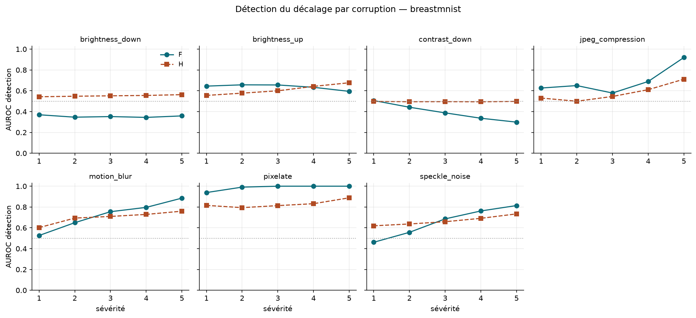
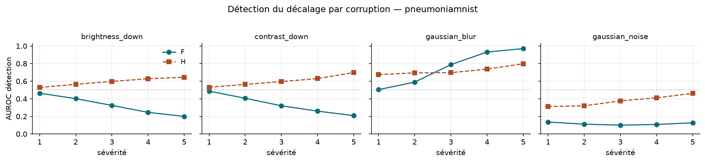
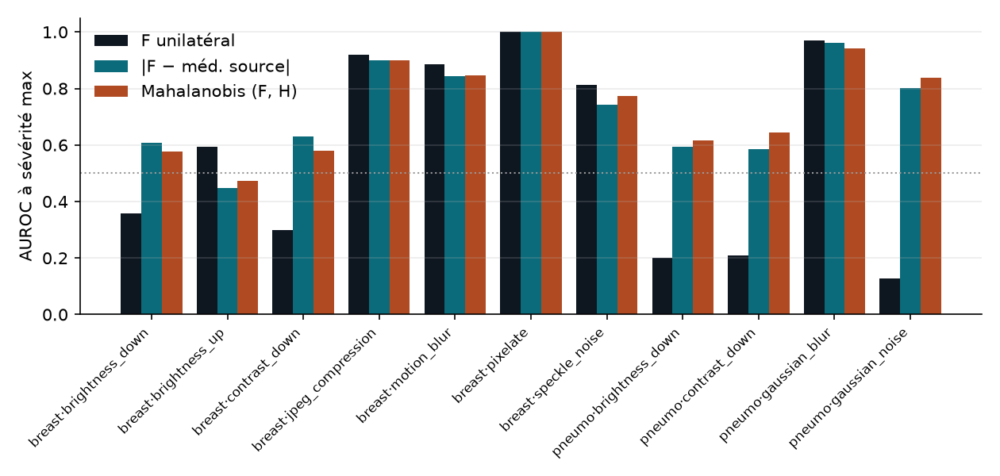
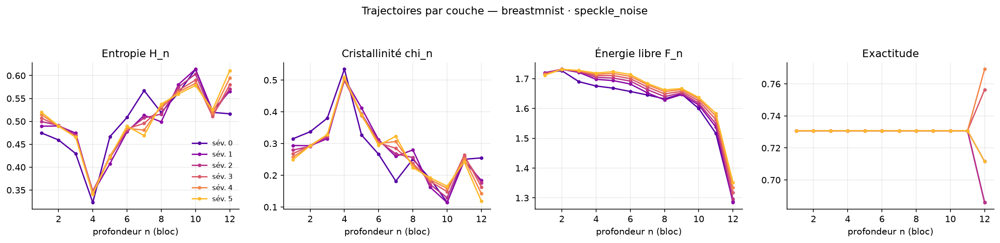
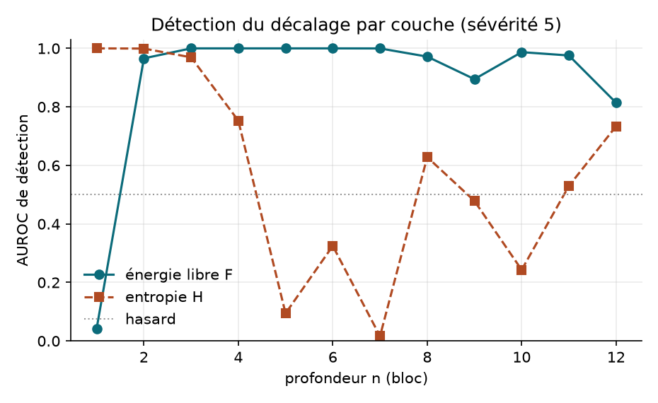
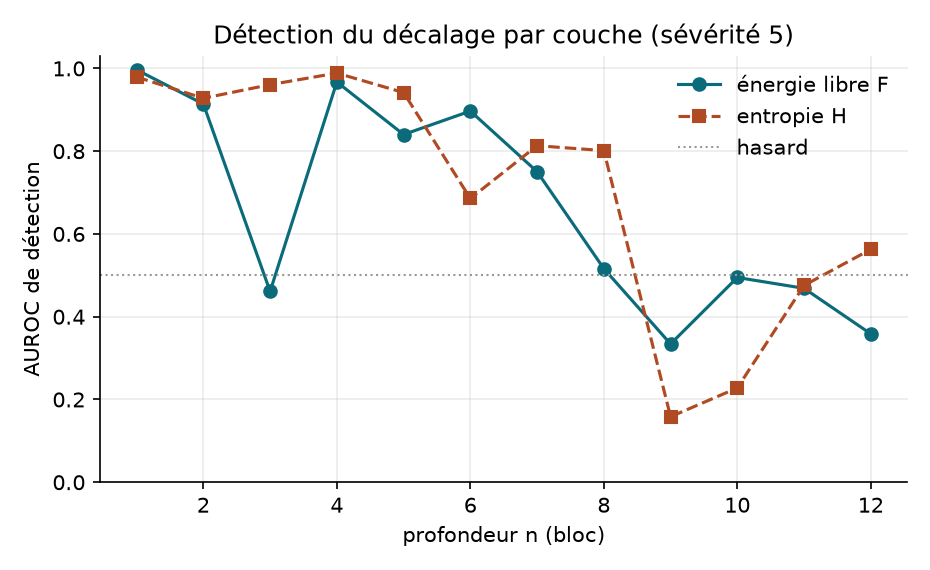
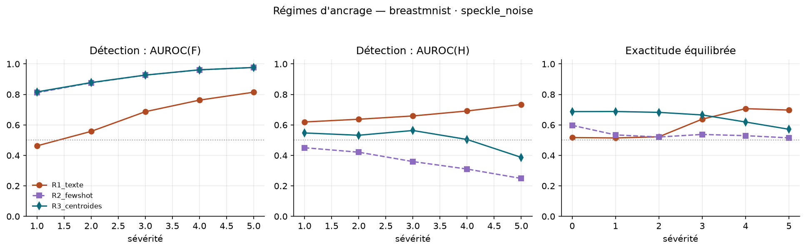
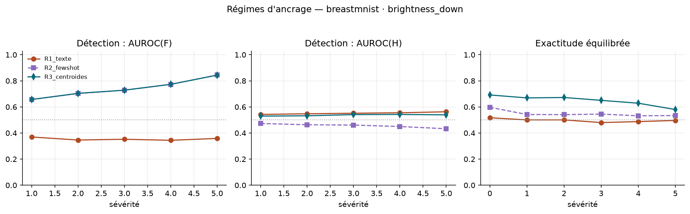

Travaux de recherche réalisés par Houssem Eddine Lassoued, encadré par Dr. Anis Ben Aicha et Pr. Habib Fathallah.
Détection de décalage d'acquisition par énergie libre F vs entropie H, sans aucun entraînement,
puis trajectoires des observables en fonction de la profondeur du ViT.
Modèle ViT-B-16-quickgelu (poids openai), T = 2τ ≈ 0,0200. Chaque chiffre provient d'un
outputs/<run_id>/metrics.json versionné dans le dépôt.
Contexte du projet. Travaux de recherche de thèse en Machine Learning et Deep Learning appliqués aux maladies auto-immunes. L'étude de la robustesse face aux décalages d'acquisition en imagerie médicale aligne ce projet avec ce sujet de thèse.
Faculté des Sciences de Bizerte, Université de Carthage.
Critère pré-enregistré
Évalué à la sévérité maximale (5), corruption vs images propres :
#
Critère
Seuil
C1
AUROC(F)
≥ 0,70
C2
AUROC(H)
≤ 0,60
C3
AUROC(F) − AUROC(H)
≥ 0,05
La prédiction est confirmée seulement si les trois tiennent.
Le critère C2 (AUROC(H) ≤ 0,60) échoue sur les 11 configurations canoniques —
prediction_confirmee: false partout. Réfutation consignée telle quelle.
Dichotomie structurel / photométrique
F ≫ H sur les corruptions qui détruisent la structure spatiale (pixelate, jpeg, motion_blur,
speckle, gaussian_blur) ; F passe sous le hasard sur les corruptions photométriques
(brightness, contrast, bruit gaussien radiographique) : les images corrompues se
rapprochent des ancres textuelles. F est un détecteur signé.

BreastMNIST — AUROC(F) et AUROC(H) par sévérité, pour chacune des 7 corruptions.

PneumoniaMNIST — même lecture, réplication sur une seconde modalité.

Comparaison à sévérité maximale : F unilatéral, |F − médiane source| (bilatéral),
distance de Mahalanobis (F, H) (bivarié).
Score bivarié (F, H)
Distance de Mahalanobis du couple (F, H) au nuage source, calibrée sur la source seule.
Gain incrémental : meilleur sur 5 des 11 configurations (dont pneumonia·gaussian_noise 0,803 → 0,837),
équivalent sur 3, moins bon sur 3. brightness_up reste sous le hasard même en bivarié —
la cible se rapproche du centre source dans le plan (F, H) ; aucune statistique de distance
calibrée sur la source ne peut le voir.
Expérience 2 — trajectoires par couche (profondeur N comme variable)
Sonde « logit lens » : embedding CLS après chacun des 12 blocs du ViT visuel, projeté sur
l'espace des ancres, sans aucun entraînement. Expérience exploratoire déclarée
(pas de seuil pré-enregistré). BreastMNIST, sévérités 0–5, seed 0.
Corruption
Meilleure couche (F)
AUROC(F) à cette couche
AUROC(F) couche 12
run id
speckle_noise
3 (et 3–7)
1,000
0,814
20260901T165926Z_breastmnist_beee8e35
motion_blur
11
0,982
0,885
20260901T170336Z_breastmnist_19a29d7c
brightness_down
1
0,997
0,359
20260901T170957Z_breastmnist_1dfe8046
Trois lectures honnêtes :
Le signal de décalage est bien plus fort en profondeur intermédiaire —
jusqu'à la perfection (speckle : AUROC 1,000 aux couches 3–7) et l'inversion photométrique de la
couche finale disparaît aux premières couches (brightness_down : 0,997 en couche 1 contre 0,359
en couche 12).
La meilleure couche dépend de la corruption (3, 11, 1) : aucun N fixe n'est
optimal partout — le choix de la profondeur doit être calibré, ce qui motive la règle d'arrêt
par échantillon (expérience suivante).
Pas de « cristallisation en profondeur » monotone sur la source : H_n atteint
son minimum à la couche 4 puis remonte — l'attente qualitative d'une entropie décroissante avec
la profondeur est réfutée sur ce substrat, et consignée telle quelle.

Trajectoires par couche (speckle_noise) : H_n, χ_n, F_n et exactitude, une courbe par sévérité.
Run 20260901T165926Z_breastmnist_beee8e35.

Détection par couche, speckle_noise sév. 5 : F parfaite aux couches 3–7, dégradée en sortie.

Détection par couche, brightness_down sév. 5 : l'inversion de la couche 12 (0,359) n'existe pas
aux premières couches (0,997 en couche 1). Run 20260901T170957Z_breastmnist_1dfe8046.
Expérience 3 — régimes d'ancrage : invites textuelles vs centroïdes de données
Trois façons de définir les ancres μk (protocole §2.3), centroïdes calculés sur le
split train source uniquement (anti-fuite) : R1 = invites textuelles (zero-shot),
R2 = centroïdes few-shot (k = 16 par classe), R3 = centroïdes sur le train complet (n = 546).
Expérience exploratoire déclarée. BreastMNIST, sévérités 0–5, seed 0.
L'inversion photométrique était une propriété des ancres textuelles, pas de F :
avec des centroïdes de données, brightness_down passe de 0,359 (sous le hasard) à 0,844–0,845 —
dès k = 16 exemples par classe.
La faiblesse zero-shot venait des ancres : balanced accuracy 0,517 → 0,692
(R3) sur données propres. Mais Dinter diminue de R1 à R3 (0,103 → 0,007) alors que la
classification s'améliore : la distance brute entre ancres n'est pas, seule, le bon indicateur de
qualité — c'est la position des ancres dans le nuage des images qui compte.
H devient un mauvais détecteur sous R2/R3 (AUROC 0,25–0,54) : avec des ancres
proches du nuage, la corruption déplace les images sans augmenter l'hésitation — la dominance
de F comme détecteur s'accentue.

speckle_noise — détection AUROC(F), AUROC(H) et exactitude équilibrée par sévérité, trois régimes.
Run 20260901T173740Z_breastmnist_fe6d6b35.

brightness_down — l'inversion de F sous R1 (courbe sous 0,5) disparaît sous R2/R3.
Run 20260901T174749Z_breastmnist_bccf7433.
Limites et prochaines étapes
Les ancres textuelles CLIP openai sont quasi aveugles sur BreastMNIST
(balanced accuracy 0,517 à sévérité 0) — toute lecture de H vs F est conditionnée à cette
géométrie d'ancres faible.
Les couches intermédiaires sont lues par « logit lens » (projection finale appliquée à des
représentations jamais alignées à l'espace texte par l'entraînement) : leur pouvoir de détection
est une observation empirique, pas une garantie théorique.
Prochaine étape : règle d'arrêt par échantillon calibrée sur la source (profondeur adaptative),
centroïdes de données R2/R3, cohorte P1 (BUSI → UDIAT → BUS-UCLM) ;
contrôle BiomedCLIP sur la configuration finale.